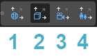
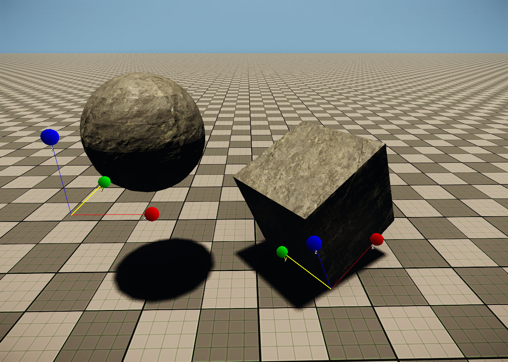
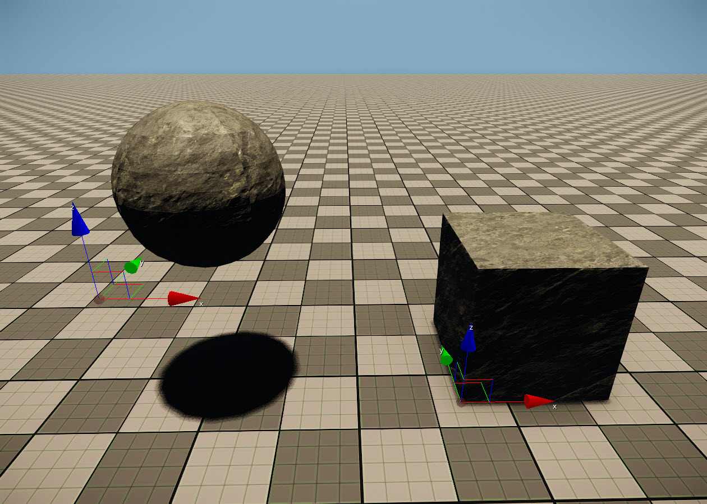
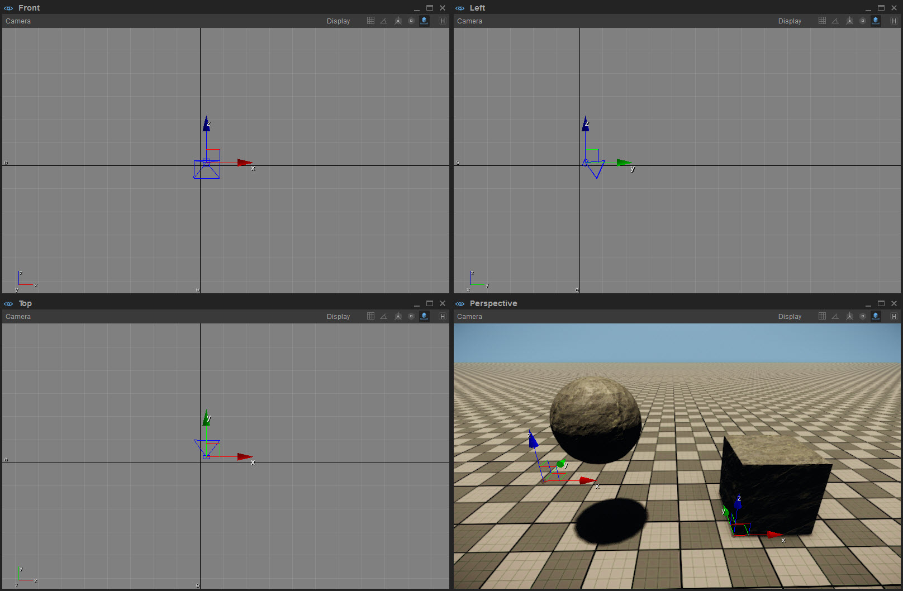

Overview
CRYENGINE by default features a world coordinate system where the Z-Axis points upwards.
When manipulating objects directly with the Axis Gizmo, you can change the coordinate system to help you with the manipulation.
You can change the coordinate system directly from the Coordinates toolbar:

# | Coordinate system | Description |
|---|---|---|
1 | World Coordinates | Uses the world axis for manipulation |
2 | Local Coordinates | Uses the object's pivot for manipulation |
3 | View Coordinates | To be used in the orthographic views, always features an x/y coordinate system |
4 | Parent Coordinates | Uses the object's parent object's pivot orientation as a reference |
World Coordinates
Uses the world's axis orientation for translation/rotation/scaling.
The Axis Gizmo always stays aligned with the world coordinate system.
This is a moving object concept, so it cannot be explained with a still picture.
Local Coordinates
Uses the selected object's original pivot orientation for translation/rotation/scaling.
In the picture below, only the cube has been rotated. Note how the axes are aligned to the cube.

View Coordinates
Relevant for Orthographic views. In Perspective view equal to World Coordinate System.


Parent Coordinates
In parent mode, the order of the selection of objects determines the coordinates of which to rotate the selection around. The first object selected becomes the pivot point of which the orientation for translation/rotation/scaling is controlled.
This is a moving object concept, so it cannot be explained with a still picture.